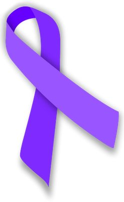
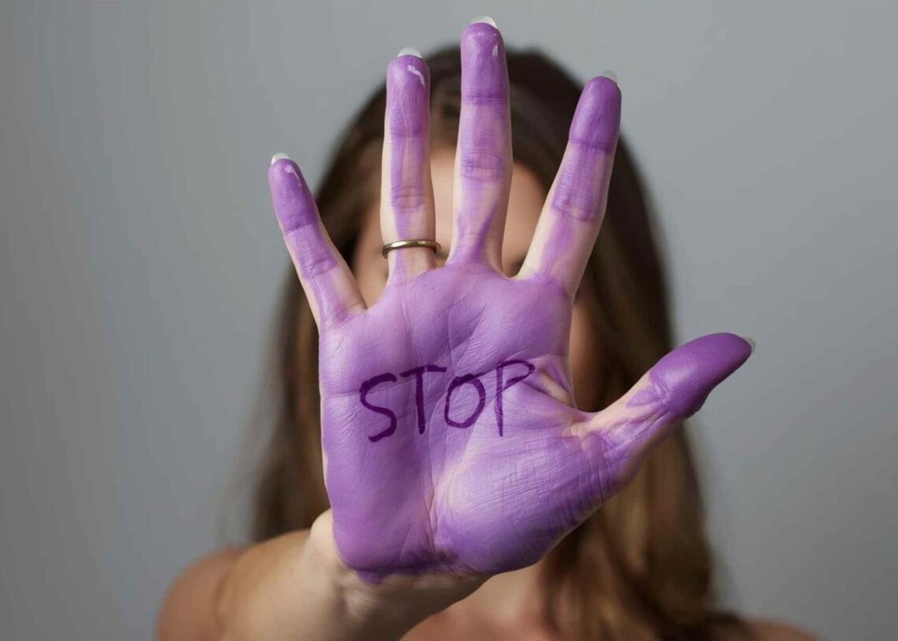

📞 Pide ayuda
Teléfonos disponibles 24/7. Atención inmediata.
📞 016 | 112
Información, recursos y apoyo. No estás sola.
Pide ayuda Más información Teléfonos disponibles 24/7. Atención inmediata.
Información sobre violencia de género.
Últimas campañas y novedades.
La violencia de género es un problema de toda la sociedad.
Recursos educativos Puntos violetaToda agresión física, psicológica, sexual o económica ejercida por razón de género.

Últimas campañas de prevención y eventos educativos.
Noticias Actuales
“Buscar apoyo fue el primer paso para recuperar mi vida. ~anonimo/a”
“La red de Puntos Violeta marcó la diferencia. ~anonimo/a”
Encuentra espacios seguros de atención en tu zona.